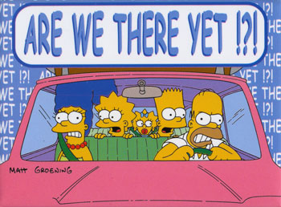

WearHacks 2015
How do you communicate?
Created by Mathieu Gagné
['hip', 'hip']
Hip Hip Array!
Who Am I
Communication
Conversation
Conversation
Ajax Polling
Ajax Long Polling
But I want Real-Time!
Pub/Sub Pattern

- Publishers
- Subscribers
- Channels
Bidirectional Realtime
WebSockets
- Cross Origin Communication
- Realtime
- Bidirectional
WebSocket libraries for supported runtimes
- (NodeJS) socket.io, ws, WebSocket-Node
- (Ruby) EventMachine, Faye Websocket
- (Python) Websocket-For-Python, Twisted, Autobahn, pywebsocket, Tornado
- (Java) Grizzly, Atmosphere, Jetty
- (PHP) Rachet, phpwebsocket
- (C++) libwebsockets
- (Errlang) Shirasu.ws
var ws = new WebSocket("ws://example.com/")ws.onopen = function(event) {
console.log('WebSocket opened.');
}
ws.onclose = function(event) {
console.log('WebSocket closed.');
reconnect();
}ws.onerror = function(event) {
var notification = new Notification(event);
reconnect();
}ws.onmessage = function(event) {
console.log(event.data);
}
ws.send("Whatever you want.");Third-Party to your help
- Pusher
- Socket.io
- PubNub
- SocketCluster (Node.js)
- SockJS
- Firebase
- etc.
Live dangerously!
Phone War Live Demo
Have Fun!
To understand what recursion is, you must first understand recursion.
while(!asleep()) sheep++